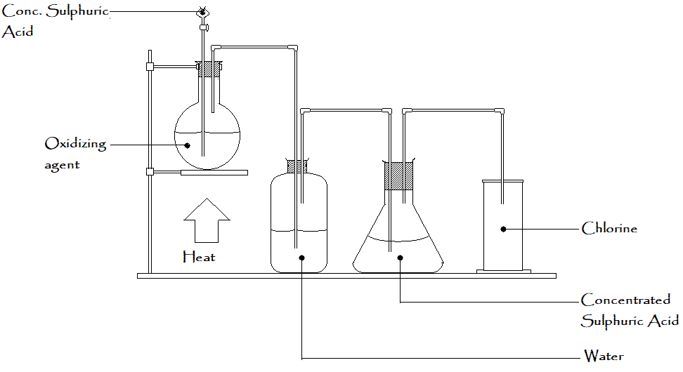

LABORATORY PREPARATION OF SULPHUR DIOXIDE
AIM: To prepare sulphur dioxide from concentrated sulphuric acid and soduim sulphite.
requirement: Round-bottomed flask, gas-jar, dilute hydrochloric acid, sodium sulphite, Bunsen burner flame, fume cupboard
Procedure:
- some sodium sulphite crystals is placed in a round bottomed flask.
- Pour some dilute HCL acid through the thislte funnel.
- Heat the mixture gently on the Bunsen Burner.
- Sulphur dioxide gas is and passed through concentrated sulphuric acid to dry it
- place the setup in a fume cupboard; since the SO2 is poisonous.
Na2 + 2HCL(aq) --------> 2NaCl(aq)+ H2O + SO2(g)
The sulphur dioxide is also obtained by heating copper solid with concentrated sulphuric acid.
Test for sulphur dioxide gas
SO2 gas decolourises acidified solutionof purple potassium permangante from purple to colourless without any deposits of Sulphur and acidified potassium dichromate from orange to green.
Uses
- As a germicide and a fumigant for destroying termites.
- As a bleaching agent for straw, sponges and wool which could easily be bleached by chlorine.
- In the manufacture of dilute sulphuric acid.
